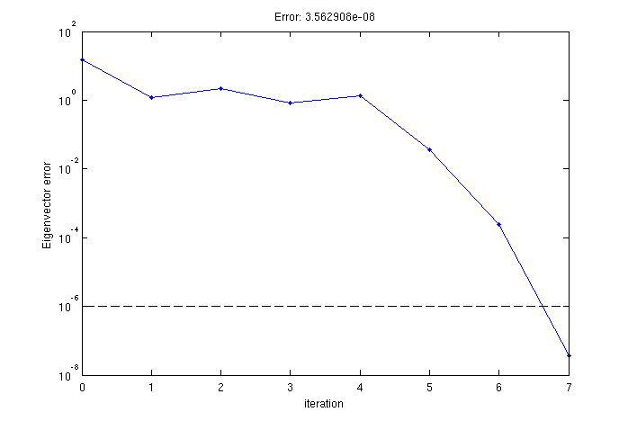

Run_all_examples
A script that runs examples for all the functions in this directory.
Contents
eigenmode_solver
% Generate a random, complex matrix and vector. n = 100; randn('state', 1); A = randn(n) + 1i * randn(n); v_guess = randn(n, 1) + 1i * randn(n, 1); % Form the needed callback functions. mult_A = @(x) A * x; solve_A_shifted = @(shift, b) (A - shift * eye(n)) \ b; vis_current = @(lambda, v) lambda; % Do nothing. % Find the eigenmode. [lambda, v] = eigenmode_solver(mult_A, solve_A_shifted, vis_current, ... v_guess, 10, 1e-6); title(sprintf('Error: %e', norm((A - lambda*eye(n))*v) / norm(v))); snapnow; return
add_planar
% For a rectangle that covers the entire grid. my_rectangle = struct('type', 'rectangle', ... 'position', [0 0], ... 'size', [1e9 1e9], ... 'permittivity', 12.25); % For a circle. my_circle = struct('type', 'circle', ... 'position', [0 0], ... 'radius', 24, ... 'permittivity', 1); % Put both shapes together. my_shapes = {my_rectangle, my_circle}; epsilon = {ones(80,80,20), ones(80,80,20), ones(80,80,20)}; epsilon = add_planar(epsilon, 5, 10, my_shapes); % my_shapes from code above. % Visualize the structure. for k = 1 : 3 subplot(2, 3, k); imagesc(epsilon{k}(:,:,10)'); axis equal tight; subplot(2, 3, k+3); imagesc(squeeze(epsilon{k}(:,40,:))'); axis equal tight; end snapnow;
maxwell_matrices
omega = 0.08;
s_prim = {ones(80,1), ones(40,1), ones(20,1)};
s_dual = s_prim;
m = {ones(80,40,20), ones(80,40,20), ones(80,40,20)};
e = m;
J = {zeros(80,40,20), zeros(80,40,20), zeros(80,40,20)};
J{2}(40,20,10) = 1; % Centrally-located point source.
[A1, A2, m, e, b] = maxwell_matrices(omega, s_prim, s_dual, m, e, J);
stretched_coordinates
omega = 0.08;
dims = [80 40 20];
t_pml = [10 10 10];
[s_prim, s_dual] = stretched_coordinates(omega, dims, t_pml);